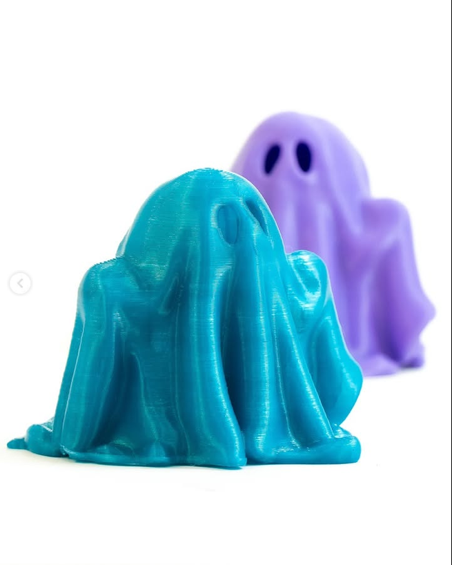
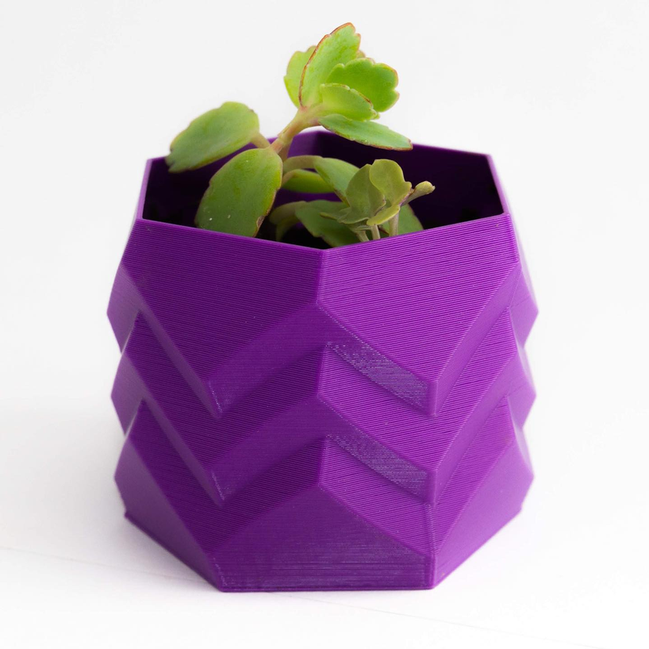
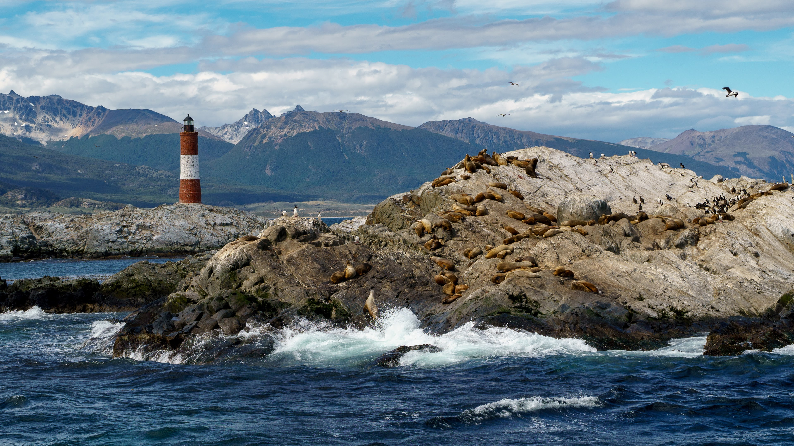
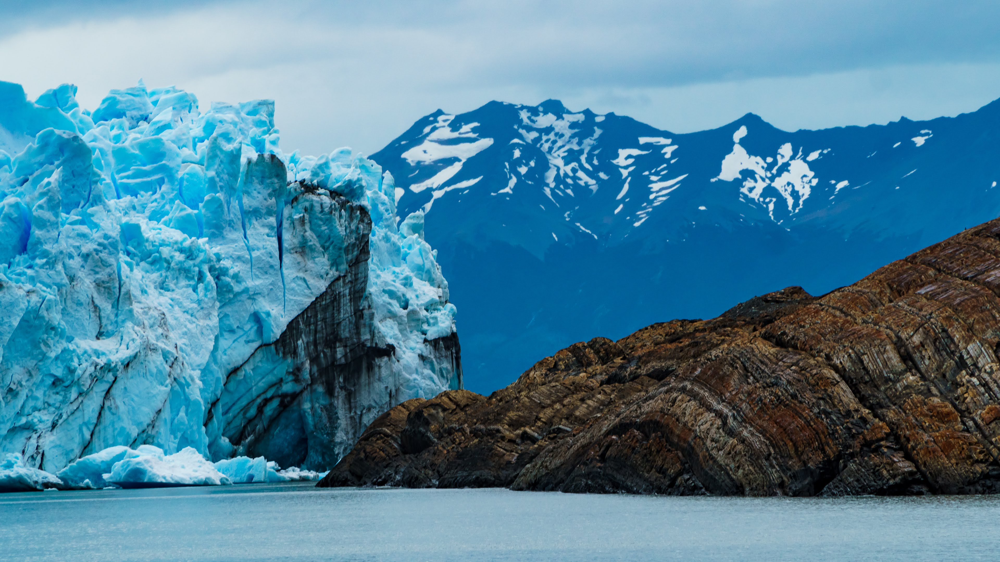
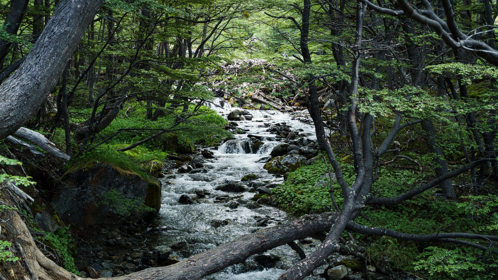
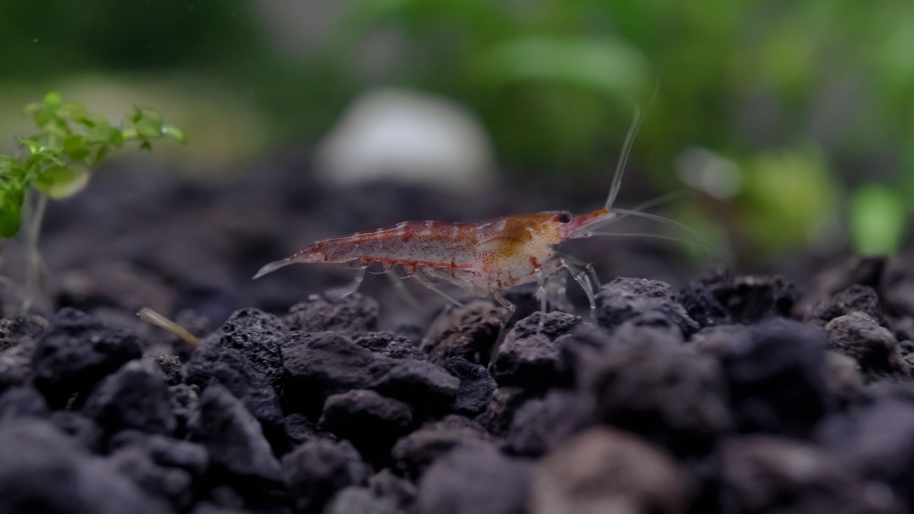

Fotografía, Registro Audiovisual y Dirección de Arte

Trayectoria y Agilidad Documental
El desarrollo profesional en el área audiovisual inició con años de experiencia en la cobertura de eventos sociales y políticos. Este entorno de alta exigencia forjó una capacidad de adaptación inmediata, el manejo de la iluminación en condiciones variables y la captura de momentos críticos bajo presión, construyendo una base sólida para el registro documental.
Fotografía de Producto y Sinergia Técnica
El enfoque visual evolucionó hacia la documentación de diseño y manufactura aditiva. A través de un emprendimiento propio de impresión 3D, se perfeccionaron técnicas de macrofotografía e iluminación de estudio (esquemas de producto) para resaltar detalles técnicos, texturas de polímeros y precisión en encastres. Este desarrollo permite gestionar íntegramente la dirección de arte y el registro comercial de todos los dispositivos de ingeniería creados.

Iluminación de Estudio y Textura de Polímeros
Registro macro comercial orientado a destacar la translucidez, textura de capas y acabados superficiales de filamentos técnicos.

Composición Geométrica y Dirección de Arte
Tomas de catálogo con enfoque crítico sobre encastres y planos geométricos bajo iluminación balanceada de estudio.
Trabajo de Autor y Reconocimientos
La exploración estética se mantiene activa mediante la producción fotográfica y de video independiente. En 2026, el trabajo autoral obtuvo reconocimiento a nivel nacional al resultar finalista con Mención de Honor en el concurso "El Mar es Uno", logrando la publicación oficial de la obra en la galería de Argentina.

Faro Les Éclaireurs & Fauna Austral
Canal Beagle, Tierra del Fuego. Manejo de luz natural cambiante, fauna marina en su hábitat y cordillera fueguina de fondo.

Masa Glaciar & Escala Geológica
Patagonia. Captura de alta resolución revelando la textura del hielo milenario en contraste con la piedra sedimentaria.

Atmósfera y Bosque Subantártico
Ushuaia. Exposición de naturaleza capturando el dinamismo del curso de agua y la rica textura del bosque fueguino.

Macrofotografía & Hobby
Acuariofilia. Control milimétrico de la profundidad de campo y velocidad de obturación para capturar microfauna acuática viva.